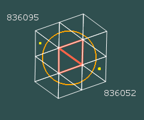

A set of trixels that covers a region is called a covermap. Trixels that are completely inside are called "full" (shown with a salmon-red outline) and the rest are called "partial"
|  | |
| (a) Covermap of a large circle 16 trixels |
(b) Covermap of a small circle |
The computation of a covermap was designed so that the number of HtmID ranges are within a range of numbers. In the above two examples, the number of triangles that cover both the large and small circle are between 10 and 20. We'll explain what "HtmID range" means. In the large covermap, the two trixels with the lowest and highest HtmID's are each marked with a yellow dot. On the smaller covermap, the trixels are also smaller, and so the names, and HtmID's have more digits in them. So, one trick to compare apples to apples is to normalize the HtmIDs to a fixed level, and recast each trixel as a range of HtmID's at that given level. In our case, that would be level 20 for practical considerations. In our example the two covermaps have several triangles, the highest and lowest IDs and the ranges of level 20 IDs are in the table below
| HtmID | Htm name | HtmIDstart | HtmIDend |
| 836052 | N030013110 | 14026624991232 | 14026641768447 |
| 836095 | N030013333 | 14027346411520 | 14027363188735 |
| 13377342 | N03001330332 | 14027159764992 | 14027160813567 |
| 13377317 | N03001330211 | 14027133550592 | 14027134599167 |
The first two belong to the large circle, the last two to the small circle. You may note, that bringing these ID to a range of level 20 IDs (start, end values) keeps the numbers in the same order of magnitude. So how we represent a covermap is by the list of (start,end) value pairs of ID ranges that represents each trixel. To make matters even more favorable, this scheme allows trivial compression of this representation, because very often (though not everywhere) trixels near each other have similar IDs. The convenient upshot of this is, that if two consecutive (start, end) ranges follow one another without any gaps in the numbers, they can be represented as a single range of (start, end) values. In particular, the 16 trixels in the large covermap can bre represented by only 9 ranges.
Let's look at a specific example. Assume, that there is a table-valued function called 'fHtmCoverRegion' that returns a table of (start, end) values when given a region specification using the language described by the Region Specification Language. The circle's center is at
Lat=+39.3008, Lon=-76.610616with a 30 arc-minute (roughly 30 mile) radius. Then the table is computed by the following select statement (we make no distinction between full and partial trixels here, as that information is lost).
select * from dbo.fHtmCoverRegion('CIRCLE LATLON 39.3008 -76.610616 30')
HtmIDStart HtmIDEnd
-------------------- --------------------
14026624991232 14026658545663
14026675322880 14026692100095
14026725654528 14026742431743
14026759208960 14026775986175
14026960535552 14026977312767
14026994089984 14027027644415
14027094753280 14027161862143
14027245748224 14027262525439
14027312857088 14027363188735
(9 row(s) affected) Please see more examples of covermaps here. To find out more about how tables like this can be used for spatial searches, follow the link below to the next topic.